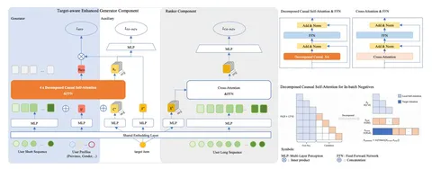
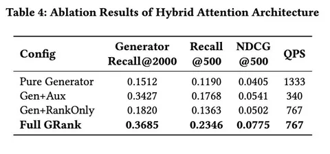

Сегодня разбираем статью о том, как построить ретривал для миллиардов айтемов, сохранить target-aware-ность, уложиться в жесткий latency budget и при этом обойтись без сложных индексов.
В классическом ретривале из миллиардов кандидатов нужно быстро вернуть тысячи или десятки тысяч айтемов, которые дальше пойдут в ранжирование. Поэтому часто используются двубашенные подходы: отдельно получаем юзерный эмбеддинг, отдельно — эмбеддинги айтемов, а дальше считаем какую-то простую функцию вроде dot product и ищем «ближайшие» к юзеру айтемы.
У такого подхода сильно ограничена выразительная способность, ведь эмбеддинги юзеров и айтемов взаимодействуют только через выбранную простую функцию, но никак иначе.
При этом хочется добавить target-aware-ность в архитектуру через более плотное взаимодействие конкретного кандидата с юзером. Например, если хотим понять, насколько юзеру релевантна компьютерная мышь, то можно посмотреть на историю его действий, увидеть что-то о ноутбуках и обратить внимание именно на это. То есть, хочется «перевзвешивать» историю юзера относительно конкретного таргета.
На ретривал-стадии так сделать не получится из-за того, что кандидатов слишком много и обработать их надо быстро. Можно строить сложные индексы на основе деревьев или графов, но их тяжело поддерживать, они замедляют инференс и становится труднее контролировать latency.
В работе предлагается от всего этого уйти и разбить ретривал на две стадии:
1) Генератор, который должен очень быстро вернуть чуть больше кандидатов, чем в итоге нужно. В продовом сетапе авторов он достаёт 2000 айтемов, количество которые потом сужаются до 500. При этом сам генератор на инференсе остается обычной двубашенной моделью.
2) Преранкер, который представляет собой target-aware-подход уже на маленьком наборе кандидатов через cross-attention, после чего выдает более выразительные скоры релевантности.
Самая интересная часть статьи — о том, как учится генератор.
Обычно мы берём юзерный эмбед после трансформера, считаем dot product с айтемом и учим модель отличать позитив от негативов. В GRank к этому добавляют вспомогательную target-aware-задачу.
Берут те же таргет и негативы, подставляют их в историю, прогоняют через трансформер с ранним связыванием и считают лосс по полученным скорам — генератор одновременно учится на обеих задачах.
На инференсе эта target-aware-компонента никак не используется, и мы получаем классический быстрый двухбашенный подход.
По аблейшенам эта компонента выглядит самой важной частью системы — если взять просто генератор, то жертвуем качеством; если добавить только ранкер, метрики лучше, но всё равно проседают относительно полного GRank. А когда к генератору добавляют target-aware-компоненту в лоссе, получается самый большой прирост.
По экспериментам авторы докладывают о двузначных приростах в Recall и NDCG, причём не только на своём датасете. При этом по пропускной способности GRank остаётся примерно на уровне предыдущего двубашенного решения, а подходы со сложными индексами проседают.
@RecSysChannel
Разбор подготовил

